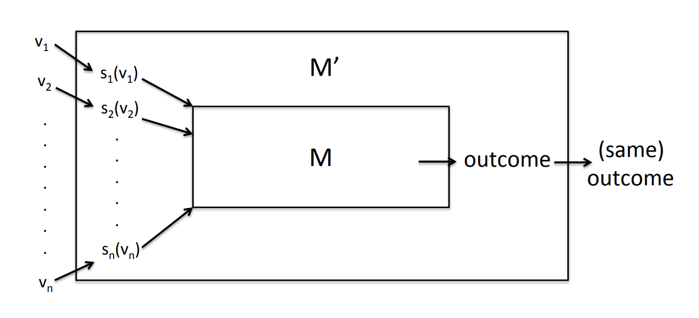

之前提到，我们希望拍卖机制同时满足DSIC、最大化社会剩余、多项式运行时间。我们有一个很好的结果：
结论：对任意一个单参数环境，假设其feasible set为 $X$，最大化剩余的分配规则是 $\mathbf x(b) = \arg \max_{(x_1,...,x_n)\in X} \sum_{i=1}^{n}b_ix_i$，则这个分配规则是单调的。（假设平局以一种确定性且一致的方式被打破，比如词典顺序。）
由Myerson's lemma，在给定了单调的分配规则后，我们可以轻易构建一个满足DSIC的拍卖机制 $(\mathbf x,\mathbf p)$，那么问题在哪里呢？
坏消息
问题在于，最大化社会剩余和多项式运行时间往往不能同时满足。
以电视广告时长拍卖为例，bidders希望在电视上播放广告，每个bidder都有一个公开的广告时长 $w_i$ 和私人的估价 $v_i$，广告时长的总上限为 $W$.
为了最大化社会剩余，我们不得不解决这个优化问题：
$$ \text{Maximize:} \quad \sum_{i} v_i x_i $$ $$ \text{s.t.} \quad \sum_{i} w_i x_i \leq W $$ $$ x_i \in \{0, 1\} \quad \forall i $$这是一个0-1背包问题。众所周知，背包问题是NP-hard的，因此我们（目前）没有很好的多项式时间算法来最大化社会剩余。
这就是问题所在，最大化剩余和多项式运行时间往往是矛盾的。因此，我们需要一些启发式算法近似最优解。不过用启发式算法得到的分配规则就不一定是单调的了。更糟糕的是，已经证明不存在一个像黑盒一样的，输入启发式算法就能输出一个monotone版本启发式算法的规则。(参考 On the Limits of Black-Box Reductions in MechanismDesign)
说完了坏消息，有没有好消息呢？
好消息
好消息是，对给定的机制 $M$，假设每个bidder都有dominated strategy，那么我们可以轻易地得到一个满足DSIC的机制 $M'$. 具体来说，假设bidder在 $M$ 中的dominated strategy是输入 $b_i$，那么我们在 $M'$ 中加一层复合函数 $s_i$，令 $s_i(v_i)=b_i$，并把经过 $s_i$ 的输入再输入到 $M$ 中即可。由于在 $M$ 中输入 $b_i$ 是支配策略，那么在 $M'$ 中输入真实估值 $v_i$ 就成了支配策略。
